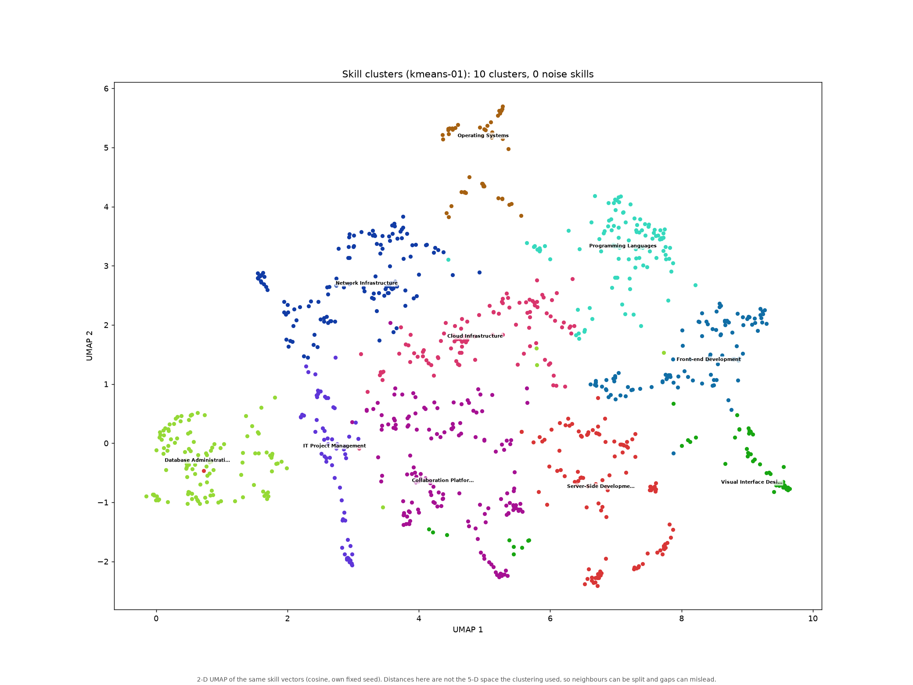
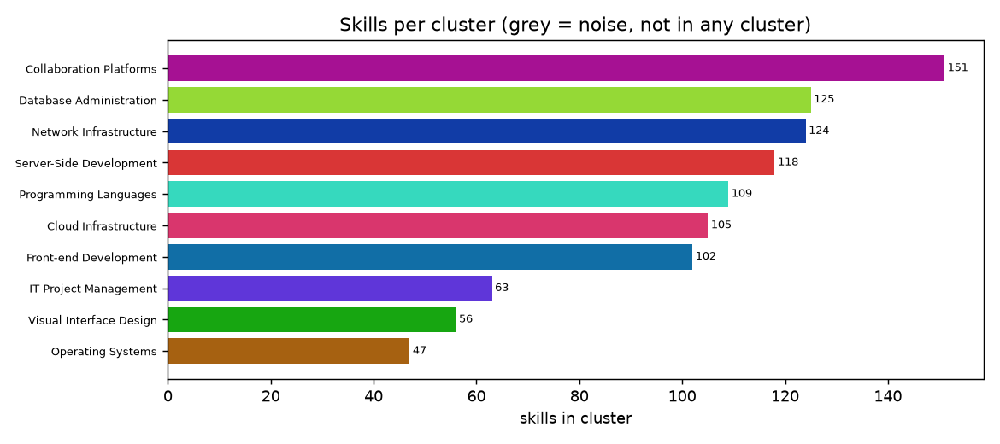
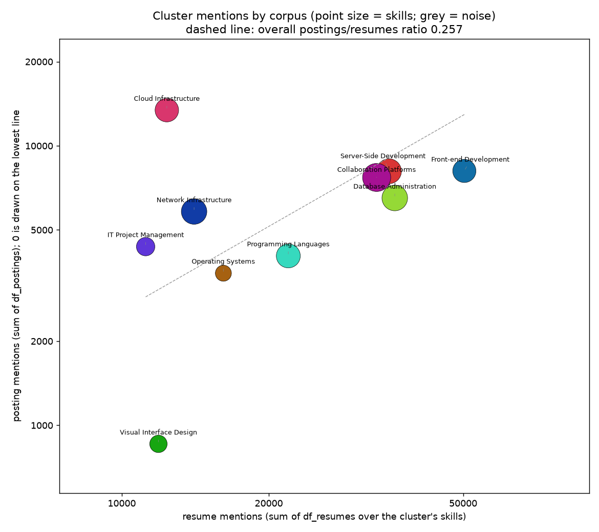
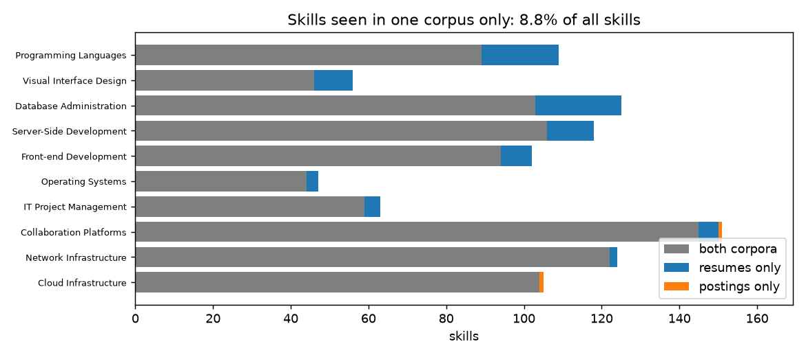
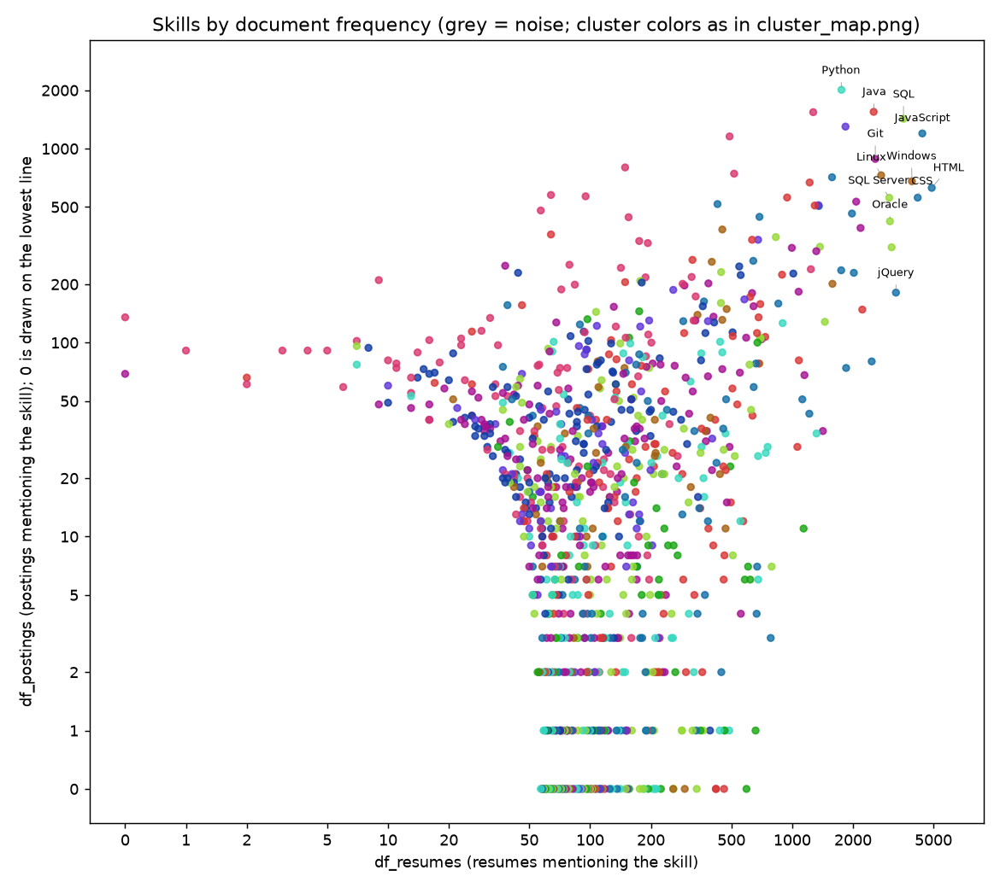
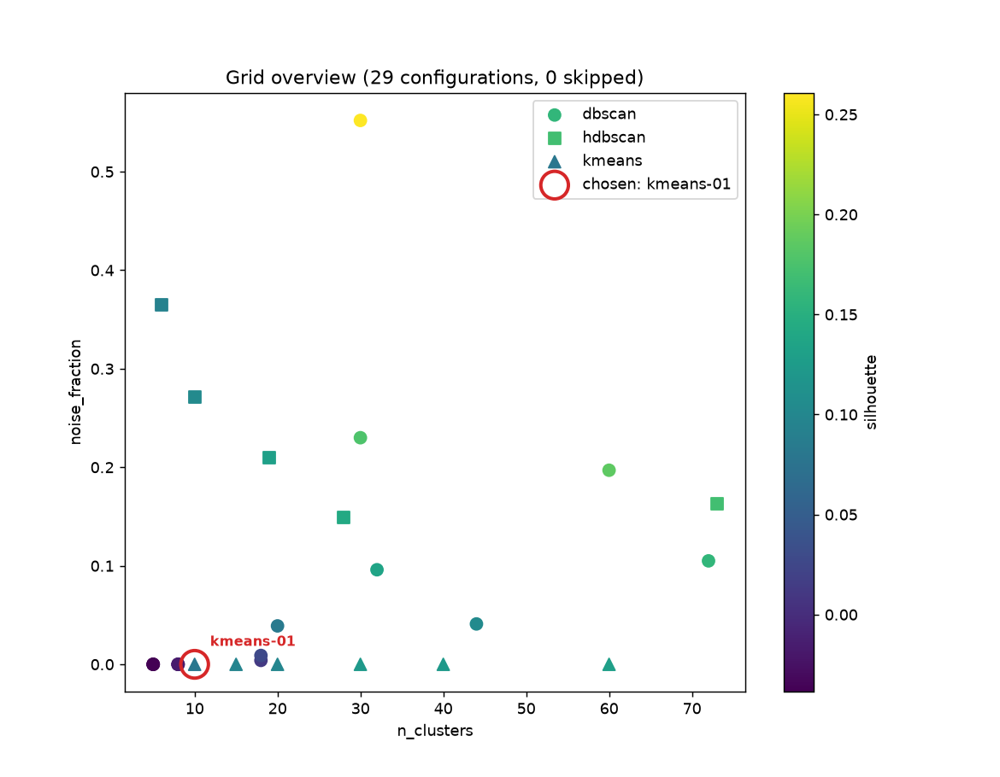

Config kmeans-01: 10 clusters, 0 of 1000 skills are noise; 8.8% of skills appear in only one corpus.
Each dot is a skill, colored by cluster (grey = noise). Positions come from a separate 2-D UMAP, so distances are only a rough guide to the clustering space.
open cluster_map.html on its own

Skills per cluster, largest first; noise on top.

One point per cluster. Points on an axis are mentioned in one corpus only.

Skills per cluster that occur in both corpora, only resumes or only postings.

Every skill at (resume df, posting df), colored by cluster.

All configurations: clusters vs noise, silhouette as color; the chosen one is ringed.
